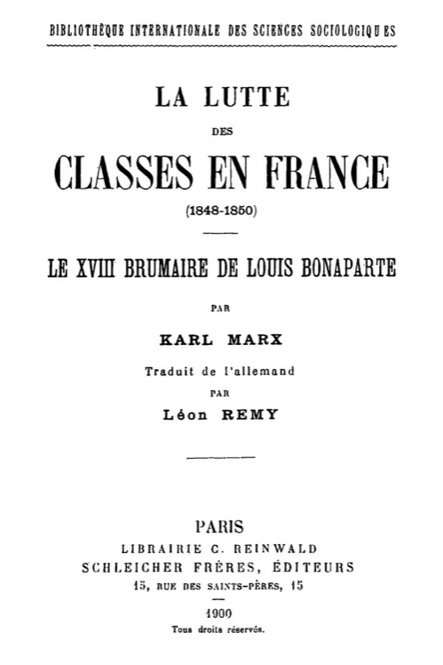

Karl Marx · écrit de décembre 1851 à février 1852, publié à New York en 1852 · traduction Léon Remy (1900) · domaine public
Le XVIII brumaire de Louis Bonaparte
Le texte s'affiche ici.
Dans ce chapitre
Le cheminement
Huit marches : d’un fait que personne n’explique à un État qui repose sur un sac de pommes de terre.
1
Marche 1 : Un fait que personne n’explique
Préface de l’auteur
Trois livres paraissent sur le coup d’État. Victor Hugo n’y voit que l’acte de violence d’un individu isolé, et grandit ainsi celui qu’il veut abattre, en lui prêtant une force d’initiative sans exemple ; Proudhon le rapporte à un développement antérieur, et sa construction historique se change insensiblement en apologie du héros.
Voir à l'œuvre
Ce qu'elle force : Marx annonce une troisième voie, qui est tout le programme du livre : montrer que la lutte des classes a créé des circonstances telles qu’un personnage médiocre et grotesque ait pu y jouer un rôle héroïque. Ce n’est donc ni l’homme ni la fatalité qu’il s’agit d’expliquer, mais la situation qui a rendu l’un et l’autre possibles.
2
Marche 2 : Les hommes font leur histoire, mais non dans des conditions choisies
Chapitre I
La proposition de méthode, et elle tient en deux temps : les hommes font leur propre histoire, mais dans des conditions qu’ils ont trouvées toutes faites, et la tradition de toutes les générations défuntes pèse comme un cauchemar sur le cerveau des vivants.
Voir à l'œuvre
Ce qu'elle force : Il suit de là que le déguisement historique n’est pas un ornement mais un symptôme. Là où 1789 empruntait le costume romain pour hausser une tâche réelle, 1848 le reprend pour fuir la sienne : une révolution qui doit emprunter sa langue au passé n’a pas encore trouvé son objet, et celle du XIXe siècle devra prendre sa poésie à l’avenir.
3
Marche 3 : Ce qu’un parti dit de lui-même ne suffit pas
Chapitre III
Légitimistes et orléanistes ne se séparent pas par des principes mais par deux espèces de propriété, la terre et le capital ; et sur ces conditions matérielles s’élève toute une superstructure de sensations, d’illusions et de manières de penser que l’individu reçoit de la tradition et prend pour les raisons propres de son action.
Voir à l'œuvre
Ce qu'elle force : D’où la règle de lecture qui commande tout le livre : dans les luttes historiques plus encore que dans la vie privée, il faut distinguer ce qu’un parti dit et s’imagine de ce qu’il est réellement. Les drapeaux se lisent à partir des intérêts, et jamais l’inverse.
4
Marche 4 : La ligne descendante
Chapitre III
Dans la première révolution, chaque parti s’appuyait sur une fraction plus avancée que lui et se voyait écarté par elle : la révolution suivait une ligne ascendante. En 1848 le mouvement s’inverse, chacun attaquant par-derrière celui qui le dépasse et s’appuyant sur le front de celui qui recule.
Voir à l'œuvre
Ce qu'elle force : La révolution se défait donc par le haut, et dans l’ordre : le prolétariat en juin 1848, la petite bourgeoisie démocrate le 13 juin 1849, les républicains bourgeois ensuite. Chaque victoire de l’ordre rétrécit le cercle de ses maîtres et prépare la classe suivante à être écartée à son tour.
5
Marche 5 : La bourgeoisie détruit les conditions de son propre règne
Chapitre IV
Pour gouverner contre les autres classes, elle doit accroître sans cesse la répression, donc les moyens d’action et le personnel du pouvoir exécutif, et mutiler les organes par lesquels la société se ferait entendre. Or ces organes sont les siens : la presse, la tribune, la discussion.
Voir à l'œuvre
Ce qu'elle force : Elle en vient ainsi à condamner comme socialiste ce qu’elle avait célébré comme libéral, et jusqu’au régime parlementaire lui-même, qui ne vit que par la discussion. Sa situation de classe la force à anéantir les conditions de tout pouvoir parlementaire, donc du sien, et à donner à son adversaire une force irrésistible.
6
Marche 6 : Pour lui sauver sa bourse, il faut lui arracher la couronne
Chapitre IV
La loi du 31 mai 1850 raye trois millions d’électeurs des listes : c’est la bourgeoisie elle-même qui supprime le suffrage universel, dix-huit mois avant le 2 décembre, et Marx l’appelle son coup d’État.
Voir à l'œuvre
Ce qu'elle force : La conclusion est alors dite en toutes lettres : pour que la classe conserve sa puissance sociale, sa puissance politique doit être brisée. Elle finira donc par applaudir celui qui la dépossède, parce qu’il la débarrasse à la fois des soucis et des dangers du pouvoir.
7
Marche 7 : L’État se détache de la société
Chapitre VII
L’appareil — une armée de fonctionnaires de plus d’un demi-million à côté d’une armée qui en compte autant — est né sous la monarchie absolue, achevé par la première révolution puis par Napoléon ; chaque parti a vu dans sa prise la proie principale du vainqueur, et tous les bouleversements l’ont perfectionné au lieu de le briser.
Voir à l'œuvre
Ce qu'elle force : Instrument de la classe dominante jusque-là, il paraît sous le second Bonaparte avoir acquis son indépendance : il suffit désormais du chef de la société du 10 décembre pour le conduire. C’est cette autonomie qu’il faut expliquer, et elle ne s’explique pas par elle-même.
8
Marche 8 : Ce gouvernement ne plane pas dans les airs
Chapitre VII
L’État détaché repose sur la classe la plus nombreuse de la société : les paysans parcellaires, dont le mode de production isole les familles au lieu de les mettre en rapport, et que leur similitude additionne sans les unir, à peu près comme un sac de pommes de terre.
Voir à l'œuvre
Ce qu'elle force : Vivant dans la même situation sans être liés par elle, ils ne peuvent faire prévaloir leur intérêt en leur propre nom : ils ne peuvent se représenter eux-mêmes, il faut les représenter, et leur représentant doit leur apparaître sous la forme d’un maître. L’autonomie de l’exécutif a ainsi sa base sociale, et la ruine de la parcelle fera s’écrouler l’État élevé sur elle.
Il n’y a donc ni coup de tonnerre ni fatalité : une situation où chaque classe, l’une après l’autre, a renoncé à se gouverner, et un pouvoir qui a recueilli ce qu’elles avaient toutes abandonné.
Six forces politiques, et l’intérêt social que chacune exprime sans le dire.
Choisissez une force politique.
Sous les Bourbons, la grande propriété foncière avait régné avec ses prêtres et ses laquais. Sous les d’Orléans, c’était la grande finance, la grande industrie, le grand commerce, c’est-à-dire le capital avec sa suite d’avocats, de professeurs et de beaux parleurs.
Ce qu’il dit de lui-même
Une coalition de royalistes que séparent deux dynasties, les Bourbons et les Orléans, et que réunit la défense de l’ordre, de la propriété, de la famille et de la religion.
Ce que Marx montre
Que ce ne sont pas des nuances de royalisme mais deux espèces de propriété : la terre d’un côté, le capital de l’autre — et que la rivalité des deux maisons ne fait que personnifier celle des deux intérêts. La fusion des dynasties échouera pour cette raison, et non par entêtement de famille.
Ce qu’il en résulte
La république parlementaire n’est pas subie faute de mieux : elle est la seule forme où les deux fractions puissent régner ensemble, au nom de la classe entière plutôt que d’une de ses parts. Ils insultent donc le régime qui les fait régner, et se disent républicains chaque fois qu’ils doivent le défendre contre le président.
Ce n’était pas une fraction de la bourgeoisie que réunissait un puissant intérêt commun, que déterminaient des conditions de production particulières. C’était une coterie de bourgeois, d’écrivains, d’avocats et de fonctionnaires possédant des idées républicaines.
Ce qu’il dit de lui-même
Le parti de la République, héritier légitime de la monarchie de Juillet, et l’adversaire de l’aristocratie financière.
Ce que Marx montre
Qu’aucun intérêt commun ni aucune condition de production particulière ne le constitue : c’est une coterie, dont l’influence tient à des antipathies personnelles contre Louis-Philippe, au souvenir de la première République et au nationalisme. Il veut que la domination bourgeoise prenne la forme républicaine, et d’abord qu’elle lui en laisse la part du lion.
Ce qu’il en résulte
Un parti sans base se conserve aussi longtemps qu’il sert, et disparaît dès qu’il cesse de servir. Sa suprématie dure six mois ; son œuvre tient dans une constitution et dans l’état de siège de Paris. Marx écrit qu’ils n’ont pas péri, mais disparu.
on demande des institutions républicaines, démocratiques, non pour supprimer deux extrêmes, le capital et le salariat, mais pour atténuer leur antagonisme et le transformer en une harmonie.
Ce qu’elle dit d’elle-même
La représentation du peuple contre une classe privilégiée, et la défense des droits éternels de l’homme.
Ce que Marx montre
Qu’elle est la coalition des petits bourgeois et des ouvriers, et que son contenu propre est de demander des institutions démocratiques non pour supprimer le capital et le salariat, mais pour atténuer leur antagonisme. Ses représentants peuvent être à cent lieues des boutiquiers par l’instruction et la fortune : ce qui en fait leurs représentants, c’est que leur pensée ne franchit pas les limites que ceux-ci ne franchissent pas dans leur vie.
Ce qu’il en résulte
C’est le passage le plus général du livre, et il vaut au-delà de son objet : tel est le rapport qui unit en général les représentants politiques et littéraires d’une classe à la classe qu’ils représentent. Se croyant au-dessus de l’antagonisme des classes, la démocratie n’examine pas ses forces avant d’appeler aux armes — d’où le 13 juin 1849.
bref toute cette masse indéterminée, décomposée, flottante que les Français appellent « la Bohême ».
Ce qu’elle dit d’elle-même
Une société de bienfaisance, qui organise les nécessiteux de Paris.
Ce que Marx montre
Qu’elle enrôle en sections secrètes des roués ruinés, les déchets de la bourgeoisie, des vagabonds, des forçats libérés, des filous et des mendiants — et que son chef y trouve la seule masse dont les intérêts soient exactement les siens. C’est là le vrai Bonaparte, celui que Marx appelle le Bonaparte sans phrase.
Ce qu’il en résulte
Une classe qui n’est pas une classe, faite du rebut de toutes les autres, peut servir de base à un pouvoir — à condition qu’il l’entretienne. D’où la formule du livre sur l’imposture : vieux roué, il prend les affaires d’État pour une comédie, et devient la victime de sa propre vue du monde le jour où, Polichinelle sérieux, il prend sa comédie pour de l’histoire.
Ils ne peuvent se représenter eux-mêmes, il faut les représenter. Leur représentant doit leur apparaître de plus sous la forme d’un maître, d’une autorité, d’un pouvoir illimité, capable de les protéger contre les autres classes et de faire en leur faveur la pluie et le beau temps.
Ce qu’ils disent d’eux-mêmes
Rien, et c’est le point : ils n’ont ni journal, ni parti, ni congrès. Leur vote de décembre 1848 a parlé pour eux.
Ce que Marx montre
Que leur mode de production les isole au lieu de les mettre en rapport, si bien qu’ils vivent dans la même situation sans être liés par elle : une simple addition de grandeurs de même nom, à peu près comme un sac de pommes de terre. Ils forment donc une classe par leurs conditions d’existence, et n’en forment pas une par leur organisation.
Ce qu’il en résulte
L’énoncé le plus discuté du livre : ils ne peuvent se représenter eux-mêmes, il faut les représenter — et leur représentant doit leur apparaître comme un maître. La dynastie ne représente d’ailleurs pas le paysan révolutionnaire mais le paysan conservateur ; non son avenir, mais son passé.
Le prolétariat parisien restait seul de son côté. Plus de trois mille insurgés furent massacrés après la victoire, quinze mille furent transportés sans jugement.
Ce qu’il dit de lui-même
Il a conquis la République les armes à la main et lui a imprimé son sceau en la proclamant sociale.
Ce que Marx montre
Que l’objet ainsi indiqué se trouvait dans la plus étrange contradiction avec les matériaux existants et le degré de développement atteint par la masse. En juin 1848, toutes les autres classes lui font front : il reste seul de son côté, et succombe dans ce que Marx appelle l’événement le plus colossal de l’histoire des guerres civiles européennes.
Ce qu’il en résulte
Vaincu, il passe à l’arrière-plan, s’allie à chaque couche qui entre en fermentation et partage toutes leurs défaites ; il se jette dans les banques d’échange et les associations, c’est-à-dire cherche son affranchissement à l’insu de la société. Sa défaite est la condition de tout ce qui suit : c’est elle qui aplanit le terrain de la République bourgeoise.
Ce que le livre a ouvert
Trois acquis, trois contresens, et les endroits où l’argument se poursuit.
Ce que le livre établit
Et qu’aucun autre texte de Marx n’établit ainsi.
Une méthode. Les hommes font leur histoire, mais dans des conditions trouvées toutes faites : ni la volonté d’un individu, ni la fatalité d’un processus.La lutte des classes →
Une règle de lecture. Ce qu’un parti dit de lui-même et ce qu’il est se distinguent comme, chez un individu, ce qu’il pense de lui-même et ce qu’il fait. C’est ici, et non dans un texte de philosophie, que Marx emploie le mot de superstructure.
Une autonomie relative de l’État. L’appareil, que toutes les révolutions ont perfectionné au lieu de le briser, paraît sous le second Bonaparte s’être affranchi de la société — sans cesser pour autant de reposer sur une classe.
Une classe qui ne peut se représenter. La parcelle isole ce qu’elle rassemble : d’où un pouvoir personnel qui tient sa force de la dispersion même de sa base.
Ce qu’on lui fait dire
Quatre contresens, dont deux tiennent à une phrase.
« L’histoire se répète. » Marx dit l’inverse : la répétition est le signe que quelque chose ne se fait pas. La seconde fois est une farce parce qu’elle emprunte un costume au lieu d’avoir le sien.
« Les individus ne comptent pas. » Le livre est tout entier occupé d’un individu, et le tient pour médiocre et grotesque. Ce qu’il refuse n’est pas l’individu, c’est d’en faire une cause première : Hugo, en ne voyant que lui, le grandit.
« L’État n’est qu’un instrument. » C’est justement ce que ce texte complique : l’instrument y acquiert une apparence d’indépendance, et la question devient de savoir ce qui la soutient.
« Bonapartisme ». Le mot n’est pas dans le livre — pas une occurrence — et Marx y refuse expressément celui de césarisme, dont l’analogie romaine fait oublier que la lutte antique se jouait entre riches et pauvres libres, la masse des producteurs esclaves ne servant que de piédestal. Le concept est de la postérité, non de l’auteur.
Où l’argument se poursuit
Dans Marx, et dans ce site.
Le récit qui précède.La Lutte des classes en France couvre 1848-1850 et s’arrête où celui-ci commence ; les deux ont paru dans le même volume en 1900, sous la même plume française.
La base économique. Ce que ce livre suppose — l’accumulation, la rente, l’hypothèque qui ruine la parcelle — est établi quinze ans plus tard.Le Capital, Livre I →
La préface de 1859. La formule qui résume la méthode employée ici y est donnée pour elle-même, six ans après.La Contribution →
Le programme de février 1848. Le Manifeste annonce ce que la révolution allait faire ; ce livre raconte ce qu’elle a fait.Le Manifeste →
Marx a écrit ces pages en six semaines, pour une revue d’émigrés allemands de New York qui n’a pas dépassé son deuxième numéro. Il le rappelle en tête : l’écrit est né sous la pression directe des événements, et sa matière ne dépasse pas février 1852. Dix-sept ans plus tard, rééditant sans y toucher, il se borne à corriger les fautes d’impression et à supprimer les allusions qu’on ne comprendrait plus — un remaniement, dit-il, lui aurait enlevé sa couleur propre.
La chronologie
Quarante-cinq mois de révolution, six semaines d’écriture, et quatre éditions.

Page de titre du volume servi, 1900 · numérisation Université de Bourgogne et BnF, domaine public
Ce que le livre raconte
Marx périodise lui-même, à la fin du chapitre VI, les quarante-cinq mois qu’il vient de parcourir. Ce sont ses divisions.
24 février 1848
Le prologue
Louis-Philippe s’enfuit, le gouvernement se déclare provisoire, et tout ce qui est proposé l’est de même. La République est conquise par le prolétariat les armes à la main, et chaque parti l’interprète dans son sens.
23-26 juin 1848
Les journées de Juin
Le prolétariat parisien reste seul contre toutes les autres classes : plus de trois mille insurgés massacrés, quinze mille transportés sans jugement. Sa défaite aplanit le terrain de la République bourgeoise.
10 décembre 1848
L’élection du président
Une réaction des paysans, qui avaient payé les frais de Février, contre les autres classes — de la campagne contre la ville. Le point vulnérable de la constitution est désormais occupé.
13 juin 1849
La défaite de la Montagne
Appelée aux armes puis conduite parlementairement dans la rue, la petite bourgeoisie démocrate se défait sans combattre. Sa garde nationale est dissoute, et l’armée découvre que l’uniforme était un chiffon de laine comme un autre.
31 mai 1850
Le coup d’État de la bourgeoisie
La loi électorale raye trois millions d’électeurs des listes. Le suffrage universel s’était déclaré contre la domination bourgeoise le 10 mars : elle répond en le proscrivant.
12 janvier 1851
Changarnier destitué
Le parti de l’ordre refuse l’armée qui s’offrait à lui dans la personne de son général, et perd le commandement militaire. Sans ministère, sans troupes, sans majorité, l’Assemblée n’est plus qu’un parlement de l’ancien régime.
19 juillet 1851
La révision repoussée
446 voix pour, 278 contre : la majorité se déclare contre la constitution, mais la constitution exige les trois quarts. Le Parlement a déclaré son propre pouvoir hors de la majorité.
2 décembre 1851
Le coup d’État
Les chefs parlementaires tirés de leur lit, les places garnies de troupes, la dissolution et le rétablissement du suffrage universel affichés au matin. L’événement était annoncé depuis trois ans ; il réussit malgré cela, parce qu’il était devenu nécessaire.
L’écriture
déc. 1851 – fév. 1852
Des articles hebdomadaires
Joseph Weydemeyer projette une revue politique à New York et invite Marx à y écrire l’histoire du coup d’État. Marx lui envoie des articles chaque semaine jusqu’à la mi-février : la matière historique du livre ne dépasse pas cette date.
printemps 1852
Die Revolution
Le plan primitif échoue ; Weydemeyer publie une revue mensuelle dont le deuxième numéro est rempli par le XVIII brumaire. Quelques centaines d’exemplaires gagnent l’Allemagne sans être à proprement parler mis en librairie — un libraire radical, à qui Marx en offre la vente, répond à cette prétention déplacée par un effroi vertueux.
Les éditions
réédition
La préface de Marx
C’est celle que porte le texte servi. Marx s’y explique sur Hugo et Proudhon, refuse le terme de césarisme, et note que sa dernière phrase s’est réalisée. Il n’a pas remanié le livre : un remaniement lui aurait enlevé sa couleur propre.
1885
La troisième édition, préfacée par Engels
Trente-trois ans après l’apparition de l’opuscule, dit-il en tête — ce qui date cette édition. Engels y donne le livre pour l’épreuve décisive de la loi que Marx a découverte, et tient qu’elle en est sortie brillamment.
1900
La traduction servie ici
Léon Remy traduit les deux récits de 1848-1851 dans un même volume de la Bibliothèque internationale des sciences sociologiques, chez Schleicher frères. C’est le texte de la liseuse. Remy est mort en 1910 : sa traduction est dans le domaine public.
Ressources
L’allemand d’origine, le volume numérisé, et le récit qui précède.